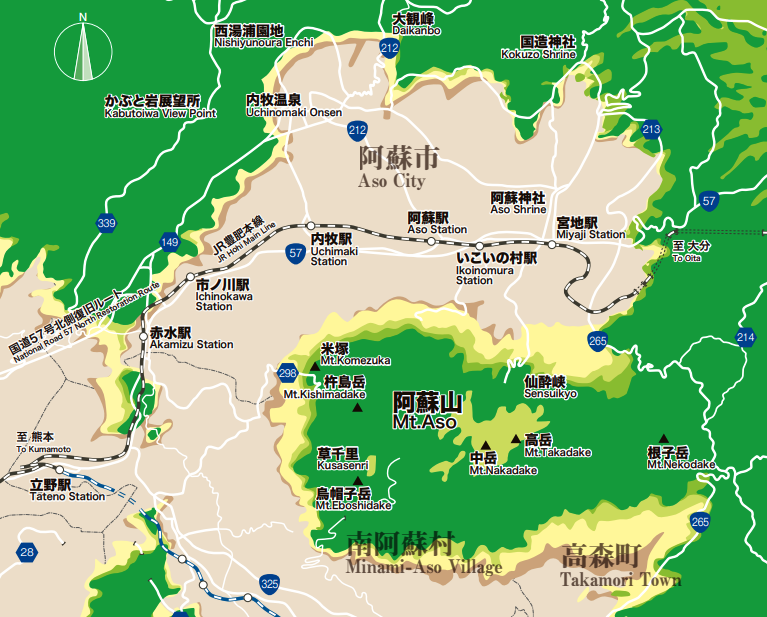

<!DOCTYPE html>
<html lang="ja">
<head>
<meta charset="UTF-8">
<meta name="viewport" content="width=device-width, initial-scale=1.0">
<title>JR豊肥本線 リアルタイム運行ボード（立野〜宮地）</title>
<script src="https://cdnjs.cloudflare.com/ajax/libs/react/18.2.0/umd/react.production.min.js"></script>
<script src="https://cdnjs.cloudflare.com/ajax/libs/react-dom/18.2.0/umd/react-dom.production.min.js"></script>
<script src="https://cdnjs.cloudflare.com/ajax/libs/babel-standalone/7.23.2/babel.min.js"></script>
<style>
  * { box-sizing: border-box; margin: 0; padding: 0; }
  body {
    background: linear-gradient(170deg, #c7e3f2 0%, #e8f0d8 30%, #f5ecd5 65%, #ead9b8 100%);
    background-attachment: fixed;
    font-family: "Hiragino Maru Gothic ProN", "Hiragino Maru Gothic Pro", "Yu Gothic UI", "Meiryo", sans-serif;
    color: #3a4a3a;
    min-height: 100vh;
  }
  .train-icon { transition: transform 1s linear; }
  @keyframes bounce { 0%,100%{transform:translateY(0)} 50%{transform:translateY(-2px)} }
  @keyframes sparkle { 0%,100%{opacity:.3;transform:scale(0.7)} 50%{opacity:1;transform:scale(1.3)} }
  @keyframes float-cloud { 0%{transform:translateX(0)} 100%{transform:translateX(20px)} }
  .running-bounce { animation: bounce 0.6s ease-in-out infinite; transform-origin: center bottom; transform-box: fill-box; }
  .sparkle-pop { animation: sparkle 1.4s ease-in-out infinite; transform-origin: center; transform-box: fill-box; }
  .pop-btn { transition: all 0.2s; }
  .pop-btn:hover { transform: translateY(-2px) scale(1.04); }
  .pop-btn:active { transform: translateY(0) scale(0.98); }
  .train-card { transition: all 0.3s; }
  .train-card:hover { transform: translateY(-2px); }
  @keyframes toast-in { 0%{transform:translateX(120%) scale(0.8) rotate(8deg);opacity:0} 60%{transform:translateX(-8%) scale(1.05) rotate(-2deg);opacity:1} 100%{transform:translateX(0) scale(1) rotate(0)} }
  @keyframes toast-out { to{transform:translateX(120%) scale(0.8);opacity:0} }
  @keyframes pop-emoji { 0%,100%{transform:scale(1) rotate(0)} 50%{transform:scale(1.3) rotate(-12deg)} }
  @keyframes pop-emoji-r { 0%,100%{transform:scale(1) rotate(0)} 50%{transform:scale(1.3) rotate(12deg)} }
  .toast { animation: toast-in 0.5s cubic-bezier(0.34,1.56,0.64,1); }
  .toast.fading { animation: toast-out 0.35s ease-in forwards; }
  .toast-emoji { display:inline-block; animation: pop-emoji 0.7s ease-in-out infinite; }
  .toast-emoji-r { display:inline-block; animation: pop-emoji-r 0.7s ease-in-out infinite; }
</style>
</head>
<body>
<div id="root"></div>
<script>
// Debug: override time via ?t=HH:MM (eg. ?t=10:30)
(function(){
  const m = location.search.match(/[?&]t=(\d{1,2}):(\d{2})/);
  if (!m) return;
  const h = parseInt(m[1]), mn = parseInt(m[2]);
  const baseTime = (() => { const d = new Date(); d.setHours(h, mn, 0, 0); return d.getTime(); })();
  const startReal = Date.now();
  const RealDate = Date;
  function FakeDate(...args) {
    if (args.length === 0) return new RealDate(baseTime + (RealDate.now() - startReal));
    return new RealDate(...args);
  }
  FakeDate.now = () => baseTime + (RealDate.now() - startReal);
  FakeDate.UTC = RealDate.UTC;
  FakeDate.parse = RealDate.parse;
  FakeDate.prototype = RealDate.prototype;
  Object.setPrototypeOf(FakeDate, RealDate);
  window.Date = FakeDate;
})();
</script>
<script type="text/babel">
const { useState, useEffect, useRef } = React;

// 駅座標（map.png 767x617 / 黒色JR鉄道線をピクセルトレースした実位置）
const STATIONS = [
  { id: "tateno",      name: "立野",       xR: 0.130, yR: 0.746 },
  { id: "akamizu",     name: "赤水",       xR: 0.218, yR: 0.543 },
  { id: "ichinokawa",  name: "市ノ川",     xR: 0.248, yR: 0.448 },
  { id: "uchinomaki",  name: "内牧",       xR: 0.404, yR: 0.365 },
  { id: "aso",         name: "阿蘇",       xR: 0.561, yR: 0.389 },
  { id: "ikoinomura",  name: "いこいの村", xR: 0.625, yR: 0.397 },
  { id: "miyaji",      name: "宮地",       xR: 0.718, yR: 0.395 },
];

const toMin = (h,m) => h*60+m;

// 種別ごとの所要時間オフセット（立野基準・分）
// 立野→宮地方向（下り）
const OFFSET_DOWN = {
  "普通":   [0, 8, 13, 19, 27, 31, 35],
  "快速":   [0, 7, 11, 17, 24, 28, 32],
  "九州横断": [0, 6, 11, 17, 26, 30, 33],
  "あそぼーい": [0, 7, 11, 18, 28, 32, 35],
};
// 宮地→立野方向（上り）：宮地基準
const OFFSET_UP = {
  "普通":   [0, 4, 8, 16, 22, 28, 36],
  "快速":   [0, 3, 7, 14, 20, 25, 32],
  "九州横断": [0, 3, 7, 14, 19, 25, 33],
  "あそぼーい": [0, 4, 10, 18, 24, 32, 40],
};
const IDS_DOWN = ["tateno","akamizu","ichinokawa","uchinomaki","aso","ikoinomura","miyaji"];
const IDS_UP   = ["miyaji","ikoinomura","aso","uchinomaki","ichinokawa","akamizu","tateno"];

function makeStops(depMin, type, dir){
  const off = (dir==="down" ? OFFSET_DOWN : OFFSET_UP)[type] || OFFSET_DOWN["普通"];
  const ids = dir==="down" ? IDS_DOWN : IDS_UP;
  return ids.map((id,i)=>({id, t: depMin+off[i]}));
}

// 下り（立野→宮地・大分方面）
// 出典：JR九州駅別時刻表 立野駅 2026/5/11(月)
const DOWN_RAW = [
  ["1521D",   "普通",     "宮地",  toMin(5,56)],
  ["1521D2",  "普通",     "宮地",  toMin(7,18)],
  ["1525D",   "普通",     "宮地",  toMin(8,57)],
  ["1071D",   "九州横断", "大分",  toMin(9,30), "九州横断特急1号"],
  ["8071D",   "あそぼーい","宮地", toMin(10,56), "あそぼーい！1号"],
  ["1527D",   "普通",     "宮地",  toMin(11,38)],
  ["1073D",   "九州横断", "大分",  toMin(12,48), "九州横断特急3号"],
  ["1531D",   "普通",     "宮地",  toMin(13,45)],
  ["8073D",   "あそぼーい","宮地", toMin(14,35), "あそぼーい！3号"],
  ["1533D",   "普通",     "宮地",  toMin(15,11)],
  ["1075D",   "九州横断", "別府",  toMin(16,21), "九州横断特急5号"],
  ["1535D",   "普通",     "宮地",  toMin(16,43)],
  ["1537D",   "普通",     "宮地",  toMin(17,48)],
  ["1539D",   "普通",     "宮地",  toMin(18,41)],
  ["1541D",   "普通",     "宮地",  toMin(19,22)],
  ["1543D",   "普通",     "宮地",  toMin(20,41)],
  ["1545D",   "普通",     "宮地",  toMin(21,48)],
  ["1547D",   "普通",     "宮地",  toMin(23,14)],
];

// 上り（宮地→立野・熊本方面）
// 宮地駅発車時刻基準
const UP_RAW = [
  ["1520D",   "普通",     "肥後大津", toMin(5,19)],
  ["1522D",   "快速",     "肥後大津", toMin(5,59)],
  ["1524D",   "普通",     "肥後大津", toMin(6,41)],
  ["1526D",   "普通",     "肥後大津", toMin(7,59)],
  ["1072D",   "九州横断", "熊本",     toMin(10,1), "九州横断特急2号"],
  ["1528D",   "普通",     "肥後大津", toMin(10,21)],
  ["8072D",   "あそぼーい","熊本",    toMin(12,2), "あそぼーい！2号"],
  ["1530D",   "快速",     "肥後大津", toMin(13,2)],
  ["1074D",   "九州横断", "熊本",     toMin(13,51), "九州横断特急4号"],
  ["1532D",   "普通",     "肥後大津", toMin(14,34)],
  ["8074D",   "あそぼーい","熊本",    toMin(15,48), "あそぼーい！4号"],
  ["1534D",   "普通",     "肥後大津", toMin(16,37)],
  ["1076D",   "九州横断", "熊本",     toMin(17,20), "九州横断特急6号"],
  ["1536D",   "普通",     "肥後大津", toMin(17,44)],
  ["1538D",   "普通",     "肥後大津", toMin(18,36)],
  ["1540D",   "普通",     "肥後大津", toMin(19,43)],
  ["1542D",   "快速",     "肥後大津", toMin(20,53)],
  ["1078D",   "九州横断", "熊本",     toMin(21,50), "九州横断特急(夜)"],
];

const TRAINS_DOWN = DOWN_RAW.map(r=>({
  no: r[4]||r[0], type: r[1], dest: r[2], stops: makeStops(r[3], r[1], "down")
}));
const TRAINS_UP = UP_RAW.map(r=>({
  no: r[4]||r[0], type: r[1], dest: r[2], stops: makeStops(r[3], r[1], "up")
}));

const ST_BY_ID = Object.fromEntries(STATIONS.map(s=>[s.id,s]));

// 各駅の遊び心メッセージ
const STATION_INFO = {
  tateno:     { emoji:"🌋", flavor:["立野峡谷の玄関口！","南阿蘇鉄道との接続駅","スイッチバックは廃止されたよ"] },
  akamizu:    { emoji:"♨️", flavor:["阿蘇赤水温泉でひとっ風呂","ゴルフ場・温泉の最寄り駅"] },
  ichinokawa: { emoji:"🌾", flavor:["静かな田園風景〜","ローカル感満載"] },
  uchinomaki: { emoji:"♨️", flavor:["内牧温泉でほっこり♨️","阿蘇市街の中心駅"] },
  aso:        { emoji:"🌋", flavor:["阿蘇カルデラの玄関口！","阿蘇山ロープウェイ方面"] },
  ikoinomura: { emoji:"🏕", flavor:["いこいの村でくつろごう","キャンプ場あるよ"] },
  miyaji:     { emoji:"⛩", flavor:["阿蘇神社の最寄り駅⛩","水基めぐりの門前町"] },
};
const pickFlavor = (id) => {
  const f = STATION_INFO[id]?.flavor || [""];
  return f[Math.floor(Math.random()*f.length)];
};

// 区間ごとの経由点（黒色JR鉄道線のピクセルトレース実測値に基づく）
const LEG_VIA = {
  // 立野→赤水：立野から微かに左に膨らみつつほぼ垂直に上昇、上部で右にカーブして赤水へ
  "tateno-akamizu": [
    { xR: 0.164, yR: 0.721 },
    { xR: 0.173, yR: 0.681 },
    { xR: 0.180, yR: 0.656 },
    { xR: 0.185, yR: 0.608 },
    { xR: 0.200, yR: 0.570 },
  ],
  // 赤水→市ノ川：右上への緩いカーブ
  "akamizu-ichinokawa": [
    { xR: 0.205, yR: 0.495 },
  ],
  // 市ノ川→内牧：右上へ大きくカーブして水平に近づく
  "ichinokawa-uchinomaki": [
    { xR: 0.270, yR: 0.434 },
    { xR: 0.380, yR: 0.397 },
  ],
};

function legPoints(fromId, toId){
  const fwd = LEG_VIA[`${fromId}-${toId}`];
  const rev = LEG_VIA[`${toId}-${fromId}`];
  const from = ST_BY_ID[fromId], to = ST_BY_ID[toId];
  let mids = [];
  if (fwd) mids = fwd;
  else if (rev) mids = [...rev].reverse();
  return [{xR:from.xR,yR:from.yR},...mids,{xR:to.xR,yR:to.yR}];
}

function getPos(train, nm){
  const s = train.stops, f = s[0].t, l = s[s.length-1].t;
  if (nm < f) return {status:"before",fromIdx:0,toIdx:1,ratio:0};
  if (nm >= l) return {status:"done",fromIdx:s.length-2,toIdx:s.length-1,ratio:1};
  for (let i=0;i<s.length-1;i++){
    if (nm >= s[i].t && nm < s[i+1].t){
      return {status:"running",fromIdx:i,toIdx:i+1,ratio:(nm-s[i].t)/(s[i+1].t-s[i].t)};
    }
  }
  return {status:"done",fromIdx:s.length-2,toIdx:s.length-1,ratio:1};
}

function fmt(m){
  const h = Math.floor(m/60)%24, mn = Math.floor(m%60);
  return `${String(h).padStart(2,'0')}:${String(mn).padStart(2,'0')}`;
}

function nearTrains(trains, nm){
  return [
    ...trains.filter(t=>getPos(t,nm).status==="running"),
    ...trains.filter(t=>{const p=getPos(t,nm);return p.status==="before" && t.stops[0].t-nm<=10;})
  ];
}

// 配色：JR九州っぽい赤＋阿蘇の緑＋空色
const C = {
  upRun: "#1e6fb8",      // 上り走行（青）
  upWait: "#7eb6dd",     // 上り出発前
  downRun: "#0a4d8c",    // 下り走行（濃青）
  downWait: "#9bb8d4",   // 下り出発前
  ltdExp: "#c41e3a",     // 特急（赤）
  asoboi: "#e8a040",     // あそぼーい（オレンジ）
  rapid:  "#3a8a5a",     // 快速（緑）
  done: "#a89880",
  text: "#3a4a3a",
  textSoft: "#7a7060",
  cream: "#faf2dc",
  forestDark: "#3a5a2a",
  earth: "#8b6f47",
  jrred: "#c41e3a",
};

function trainColor(type, status, dir){
  if (status==="done") return C.done;
  if (type==="九州横断") return C.ltdExp;
  if (type==="あそぼーい") return C.asoboi;
  if (type==="快速") return C.rapid;
  return status==="running" ? (dir==="up"?C.upRun:C.downRun) : (dir==="up"?C.upWait:C.downWait);
}

function App(){
  const [now,setNow] = useState(new Date());
  const [showAll,setShowAll] = useState(false);
  const [tooltip,setTooltip] = useState(null);
  const [imgLoaded,setImgLoaded] = useState(false);
  const [imgAspect,setImgAspect] = useState(617/767);
  const [cW,setCW] = useState(window.innerWidth-28);
  const [toasts,setToasts] = useState([]);
  const [stHover,setStHover] = useState(null);
  const prevStRef = useRef({});
  const initRef = useRef(false);

  useEffect(()=>{
    const id = setInterval(()=>setNow(new Date()),1000);
    return ()=>clearInterval(id);
  },[]);

  useEffect(()=>{
    const upd = ()=>{const el=document.getElementById("mc");if(el)setCW(el.offsetWidth);};
    upd();
    window.addEventListener("resize",upd);
    return ()=>window.removeEventListener("resize",upd);
  },[]);

  const nm = now.getHours()*60 + now.getMinutes() + now.getSeconds()/60 + now.getMilliseconds()/60000;

  // 列車の状態変化を検出してトーストを発火
  useEffect(()=>{
    try {
      const events = [];
      const all = [...TRAINS_UP.map(t=>({t,dir:"up"})),...TRAINS_DOWN.map(t=>({t,dir:"down"}))];
      all.forEach(({t:train,dir})=>{
        const pos = getPos(train,nm);
        const key = pos.status+"|"+pos.toIdx;
        const prev = prevStRef.current[train.no];
        if (initRef.current && prev && prev !== key){
          const sp = prev.split("|");
          const pStat = sp[0], pToIdx = parseInt(sp[1]);
          if (pStat==="before" && pos.status==="running"){
            const sId = train.stops[0].id;
            const next = ST_BY_ID[train.stops[1]?.id]?.name||"";
            events.push({id:train.no+"-d-"+Date.now(),birth:Date.now(),
              train,dir,kind:"depart",sId,
              msg:`${ST_BY_ID[sId].name}駅 出発進行〜！次は${next}🚃💨`});
          } else if (pStat==="running" && pos.status==="running" && pToIdx<pos.toIdx){
            const sId = train.stops[pToIdx]?.id;
            if (sId){
              const info = STATION_INFO[sId];
              events.push({id:train.no+"-a-"+pToIdx+"-"+Date.now(),birth:Date.now(),
                train,dir,kind:"arrive",sId,
                msg:`${info?.emoji||"🚉"} ${ST_BY_ID[sId].name}駅 到着〜！${pickFlavor(sId)}`});
            }
          } else if (pStat==="running" && pos.status==="done"){
            const sId = train.stops[train.stops.length-1].id;
            events.push({id:train.no+"-f-"+Date.now(),birth:Date.now(),
              train,dir,kind:"final",sId,
              msg:`🎉 ${ST_BY_ID[sId].name}駅！${train.no} の旅おつかれさま✨`});
          }
        }
        prevStRef.current[train.no] = key;
      });
      initRef.current = true;
      if (events.length>0){
        const cutoff = Date.now()-6000;
        setToasts(prev=>[...events,...prev.filter(t=>t.birth>cutoff)].slice(0,5));
      }
    } catch(e) { console.error("toast detect error",e); }
  },[now]);

  const upT = showAll ? TRAINS_UP : nearTrains(TRAINS_UP,nm);
  const dnT = showAll ? TRAINS_DOWN : nearTrains(TRAINS_DOWN,nm);

  const dispH = cW*imgAspect;
  const px = (xR) => cW*xR;
  const py = (yR) => dispH*yR;

  function trainPlacement(train, nm, upOffset){
    const pos = getPos(train,nm);
    const fromSt = ST_BY_ID[train.stops[pos.fromIdx].id];
    const toSt = ST_BY_ID[train.stops[pos.toIdx].id];
    const polyR = legPoints(fromSt.id,toSt.id);
    const poly = polyR.map(p=>({x:px(p.xR),y:py(p.yR)}));
    const segLens = []; let total = 0;
    for (let i=1;i<poly.length;i++){
      const d = Math.hypot(poly[i].x-poly[i-1].x, poly[i].y-poly[i-1].y);
      segLens.push(d); total += d;
    }
    let r = pos.ratio;
    if (pos.status==="before") r = 0;
    if (pos.status==="done") r = 1;
    const target = r*total;
    let acc = 0, segIdx = 0, segR = 0;
    for (let i=0;i<segLens.length;i++){
      if (target <= acc+segLens[i] || i===segLens.length-1){
        segIdx = i;
        segR = segLens[i]>0 ? (target-acc)/segLens[i] : 0;
        break;
      }
      acc += segLens[i];
    }
    const p0 = poly[segIdx], p1 = poly[segIdx+1];
    let cx = p0.x+(p1.x-p0.x)*segR;
    let cy = p0.y+(p1.y-p0.y)*segR;
    const dx = p1.x-p0.x, dy = p1.y-p0.y, len = Math.hypot(dx,dy)||1;
    const ux = dx/len, uy = dy/len;
    let perpX = -uy, perpY = ux;
    if (perpY > 0) { perpX = -perpX; perpY = -perpY; }
    cx += perpX*upOffset; cy += perpY*upOffset;
    const angle = Math.atan2(dy,dx)*180/Math.PI;
    return {x:cx, y:cy, angle, pos, fromSt, toSt};
  }

  function TrainIcon({x,y,angle,type,label,status,dir,onEnter,onLeave}){
    const dirIsRight = Math.cos(angle*Math.PI/180) >= 0;
    const col = trainColor(type,status,dir);
    const isLtd = type==="九州横断" || type==="あそぼーい";
    const w = 46, h = 20;
    return (
      <g className="train-icon" transform={`translate(${x},${y})`} style={{cursor:"pointer"}} onMouseEnter={onEnter} onMouseLeave={onLeave}>
        {status==="running" && (
          <circle cx={0} cy={0} r={20} fill={col} opacity={0.16}>
            <animate attributeName="r" values="13;24;13" dur="2s" repeatCount="indefinite"/>
          </circle>
        )}
        <g>
          <g className={status==="running"?"running-bounce":""}>
            <ellipse cx={0} cy={h/2+4} rx={w/2-1} ry={2} fill="rgba(58,37,20,0.25)"/>
            <g transform={dirIsRight?"":"scale(-1,1)"}>
              {isLtd ? (
                // === 特急（流線型・先頭尖り） ===
                <g>
                  <path d={`M${-w/2+2},${-h/2-2} L${w/2-6},${-h/2-2} L${w/2+1},${0} L${w/2-6},${h/2+2} L${-w/2+2},${h/2+2} Z`}
                    fill={col} stroke="#fff8e8" strokeWidth={1.8}/>
                  {/* 帯ライン */}
                  <rect x={-w/2+2} y={-2.5} width={w-5} height={2.5} fill="rgba(255,255,255,0.6)"/>
                  {/* 窓 4つ */}
                  {[0,1,2,3].map(i=>(
                    <rect key={i} x={-w/2+5+i*9} y={-h/2+3} width={6} height={5} rx={1} fill="#e8f0f8" stroke="rgba(0,0,0,0.2)" strokeWidth={0.4}/>
                  ))}
                  {/* 先頭ヘッドライト */}
                  <circle cx={w/2-4} cy={-2} r={1.5} fill="#fff8e8"/>
                  <circle cx={w/2-4} cy={-2} r={0.9} fill="#ffe680"/>
                  <circle cx={w/2-4} cy={2} r={1.5} fill="#fff8e8"/>
                  {/* 台車（3対） */}
                  <circle cx={-w/2+8} cy={h/2+1} r={2.5} fill="#2a1810"/>
                  <circle cx={-w/2+8} cy={h/2+1} r={0.9} fill="#fff8e8"/>
                  <circle cx={0} cy={h/2+1} r={2.5} fill="#2a1810"/>
                  <circle cx={0} cy={h/2+1} r={0.9} fill="#fff8e8"/>
                  <circle cx={w/2-10} cy={h/2+1} r={2.5} fill="#2a1810"/>
                  <circle cx={w/2-10} cy={h/2+1} r={0.9} fill="#fff8e8"/>
                </g>
              ) : (
                // === 普通・快速（旅客車） ===
                <g>
                  <rect x={-w/2-1} y={-h/2-2} width={w+2} height={4.5} rx={2} fill="rgba(0,0,0,0.32)"/>
                  <rect x={-w/2} y={-h/2+1.5} width={w} height={h-1.5} rx={3} fill={col} stroke="#fff8e8" strokeWidth={1.8}/>
                  {[0,1,2,3].map(i=>(
                    <rect key={i} x={-w/2+5+i*9.5} y={-h/2+5} width={7} height={6} rx={1} fill="#e8f0f8" stroke="rgba(0,0,0,0.2)" strokeWidth={0.4}/>
                  ))}
                  <rect x={-w/2+1.5} y={-h/2+4} width={2} height={h-7} fill="rgba(0,0,0,0.3)" rx={0.4}/>
                  <line x1={-w/2+1} y1={h/2-3} x2={w/2-1} y2={h/2-3} stroke="rgba(255,248,232,0.6)" strokeWidth={0.8}/>
                  <circle cx={w/2-3} cy={-h/2+5.5} r={1.6} fill="#fff8e8"/>
                  <circle cx={w/2-3} cy={-h/2+5.5} r={0.9} fill="#ffe680"/>
                  <rect x={-w/2-3} y={-1} width={3} height={2} fill="#3a2520"/>
                  <circle cx={-w/2+10} cy={h/2} r={3} fill="#2a1810"/>
                  <circle cx={-w/2+10} cy={h/2} r={1.1} fill="#fff8e8"/>
                  <circle cx={-w/2+19} cy={h/2} r={3} fill="#2a1810"/>
                  <circle cx={-w/2+19} cy={h/2} r={1.1} fill="#fff8e8"/>
                  <circle cx={w/2-19} cy={h/2} r={3} fill="#2a1810"/>
                  <circle cx={w/2-19} cy={h/2} r={1.1} fill="#fff8e8"/>
                  <circle cx={w/2-10} cy={h/2} r={3} fill="#2a1810"/>
                  <circle cx={w/2-10} cy={h/2} r={1.1} fill="#fff8e8"/>
                </g>
              )}
            </g>
          </g>
        </g>
      </g>
    );
  }

  function TrainCard({train,dir}){
    const pos = getPos(train,nm);
    const dep = train.stops[0].t, arr = train.stops[train.stops.length-1].t;
    const diff = Math.ceil(dep-nm);
    const col = trainColor(train.type, pos.status, dir);
    const emoji = pos.status==="running" ? "🏃‍♀️" : pos.status==="done" ? "✅" : "⏰";
    const startName = dir==="up" ? "宮地" : "立野";
    const endName   = dir==="up" ? "立野" : "宮地";
    return (
      <div className="train-card" style={{
        background: `linear-gradient(135deg, ${col}28, ${col}10)`,
        border: `2.5px solid ${col}`,
        borderRadius: 18, padding:"8px 12px", marginBottom:8,
        opacity: pos.status==="done"?0.55:1,
        boxShadow: `0 3px 0 ${col}55, 0 6px 14px ${col}22`
      }}>
        <div style={{display:"flex",justifyContent:"space-between",alignItems:"center"}}>
          <span style={{fontWeight:900,fontSize:13,color:col,textShadow:"0 1px 0 #fff"}}>
            {emoji} {train.no}
          </span>
          <span style={{fontSize:10,background:col,padding:"3px 10px",borderRadius:14,color:"#fff",fontWeight:800,boxShadow:`0 2px 0 ${col}88`}}>
            {pos.status==="running"?"走行中":pos.status==="done"?"到着済":diff<=60?`${diff}分後`:"出発前"}
          </span>
        </div>
        <div style={{fontSize:10.5,color:C.textSoft,marginTop:3,fontWeight:600}}>
          {train.type} ／ {fmt(dep)}{startName}発 → {fmt(arr)}{endName}({train.dest})
        </div>
        {pos.status==="running" && (
          <div style={{fontSize:10,color:col,marginTop:2,fontWeight:700}}>
            📍 {ST_BY_ID[train.stops[pos.fromIdx].id]?.name} → {ST_BY_ID[train.stops[pos.toIdx].id]?.name}
          </div>
        )}
      </div>
    );
  }

  // 線路パス
  const railPathPts = [];
  for (let i=0;i<STATIONS.length-1;i++){
    const pts = legPoints(STATIONS[i].id, STATIONS[i+1].id);
    if (i===0) railPathPts.push(...pts);
    else railPathPts.push(...pts.slice(1));
  }
  const railPath = railPathPts.map((p,i)=>`${i===0?"M":"L"}${px(p.xR)},${py(p.yR)}`).join(" ");

  return (
    <div style={{padding:14,minHeight:"100vh",position:"relative",overflow:"hidden"}}>
      <div style={{position:"fixed",top:30,right:40,fontSize:34,opacity:0.3,pointerEvents:"none",animation:"float-cloud 4s ease-in-out infinite alternate"}}>☁️</div>
      <div style={{position:"fixed",top:120,left:30,fontSize:26,opacity:0.25,pointerEvents:"none",animation:"float-cloud 5s ease-in-out infinite alternate-reverse"}}>☁️</div>
      <div style={{position:"fixed",bottom:80,right:30,fontSize:22,opacity:0.45,pointerEvents:"none"}}>🌿</div>
      <div style={{position:"fixed",top:300,left:60,fontSize:20,opacity:0.45,pointerEvents:"none"}}>🍃</div>
      <div style={{position:"fixed",bottom:160,left:40,fontSize:24,opacity:0.4,pointerEvents:"none"}}>🌳</div>

      <div style={{background:"linear-gradient(135deg,#0a4d8c,#1e6fb8,#c41e3a)",borderRadius:24,padding:"14px 18px",marginBottom:14,boxShadow:"0 6px 0 #06325a, 0 10px 24px rgba(10,77,140,0.3)",position:"relative",overflow:"hidden"}}>
        <div style={{display:"flex",justifyContent:"space-between",alignItems:"center",flexWrap:"wrap",gap:8,position:"relative",zIndex:1}}>
          <div>
            <div style={{fontSize:22,fontWeight:900,color:"#fff8e8",letterSpacing:1,textShadow:"0 2px 0 #06325a, 0 3px 6px rgba(0,0,0,0.2)"}}>🚃 JR豊肥本線</div>
            <div style={{fontSize:11,color:"#fff8e8",fontWeight:700,marginTop:2,opacity:0.95}}>🌋 立野〜宮地 リアルタイム運行ボード 🌋</div>
          </div>
          <div style={{textAlign:"right",background:"rgba(255,248,230,0.3)",padding:"6px 14px",borderRadius:14,backdropFilter:"blur(4px)",border:"1.5px solid rgba(255,248,230,0.4)"}}>
            <div style={{fontSize:26,fontWeight:900,color:"#fff8e8",fontVariantNumeric:"tabular-nums",textShadow:"0 2px 0 #06325a"}}>
              {String(now.getHours()).padStart(2,"0")}:{String(now.getMinutes()).padStart(2,"0")}<span style={{fontSize:18,opacity:0.85}}>:{String(now.getSeconds()).padStart(2,"0")}</span>
            </div>
            <div style={{fontSize:10,color:"#fff8e8",fontWeight:700}}>{now.getFullYear()}/{now.getMonth()+1}/{now.getDate()}</div>
          </div>
        </div>
      </div>

      <div style={{display:"flex",gap:8,flexWrap:"wrap",marginBottom:12,alignItems:"center"}}>
        <button className="pop-btn" onClick={()=>setShowAll(v=>!v)} style={{background:"linear-gradient(135deg,#1e6fb8,#0a4d8c)",border:"none",borderRadius:22,padding:"6px 18px",fontSize:12,color:"#fff8e8",cursor:"pointer",fontWeight:800,boxShadow:"0 3px 0 #06325a",fontFamily:"inherit"}}>
          {showAll?"🔍 近い列車のみ":"📋 全列車表示"}
        </button>
        <span style={{fontSize:11,color:C.textSoft,fontWeight:700}}>
          ※ ダイヤは平日（2026/5/11時点）。土休日は一部「快速」運転あり
        </span>
      </div>

      <div id="mc" style={{position:"relative",borderRadius:24,overflow:"hidden",marginBottom:14,boxShadow:"0 6px 0 rgba(139,111,71,0.35), 0 10px 30px rgba(58,90,42,0.25)",border:"3px solid #fff8e8",minHeight:dispH}}>
        {setImgLoaded(true);setImgAspect(e.target.naturalHeight/e.target.naturalWidth);}}
          onError={()=>setImgLoaded(true)}
          style={{width:"100%",display:"block"}}/>
        <svg style={{position:"absolute",top:0,left:0,width:"100%",height:"100%",overflow:"visible"}} viewBox={`0 0 ${cW} ${dispH}`} preserveAspectRatio="none">
          {/* 線路ハイライト */}
          <path d={railPath} stroke="rgba(255,248,232,0.7)" strokeWidth={6} fill="none" strokeLinecap="round" strokeLinejoin="round"/>
          <path d={railPath} stroke="rgba(196,30,58,0.75)" strokeWidth={2.5} fill="none" strokeLinecap="round" strokeLinejoin="round" strokeDasharray="6,4"/>
          {/* 駅マーカー */}
          {STATIONS.map(st=>(
            <g key={st.id} style={{cursor:"pointer"}}
               onMouseEnter={()=>setStHover(st.id)}
               onMouseLeave={()=>setStHover(null)}>
              <circle cx={px(st.xR)} cy={py(st.yR)} r={6} fill="#fff8e8" stroke={C.jrred} strokeWidth={2.5}/>
              <circle cx={px(st.xR)} cy={py(st.yR)} r={2.5} fill={C.jrred}/>
              <circle cx={px(st.xR)} cy={py(st.yR)} r={16} fill="transparent"/>
              {stHover===st.id && (
                <circle cx={px(st.xR)} cy={py(st.yR)} r={10} fill="none" stroke={C.jrred} strokeWidth={1.5} strokeDasharray="3,2" opacity={0.8}>
                  <animate attributeName="r" values="9;13;9" dur="1.2s" repeatCount="indefinite"/>
                </circle>
              )}
            </g>
          ))}
          {/* 上り列車（線路の片側） */}
          {upT.map(train=>{
            const p = trainPlacement(train,nm,18);
            return <TrainIcon key={`u${train.no}`} x={p.x} y={p.y} angle={p.angle} type={train.type} label={train.no} status={p.pos.status} dir="up"
              onEnter={()=>setTooltip({train,pos:p.pos,dir:"up",x:p.x,y:p.y,fromSt:p.fromSt,toSt:p.toSt})}
              onLeave={()=>setTooltip(null)}/>;
          })}
          {/* 下り列車（線路の反対側） */}
          {dnT.map(train=>{
            const p = trainPlacement(train,nm,-18);
            return <TrainIcon key={`d${train.no}`} x={p.x} y={p.y} angle={p.angle} type={train.type} label={train.no} status={p.pos.status} dir="down"
              onEnter={()=>setTooltip({train,pos:p.pos,dir:"down",x:p.x,y:p.y,fromSt:p.fromSt,toSt:p.toSt})}
              onLeave={()=>setTooltip(null)}/>;
          })}
          {/* 駅ホバー: 次便ポップアップ */}
          {stHover && (()=>{
            const st = ST_BY_ID[stHover];
            const sx = px(st.xR), sy = py(st.yR);
            const findArr = (arr) => {
              const out = [];
              arr.forEach(t=>{
                const stop = t.stops.find(s=>s.id===stHover);
                if (stop && stop.t-nm >= -0.5) out.push({train:t,time:stop.t});
              });
              out.sort((a,b)=>a.time-b.time);
              return out.slice(0,2);
            };
            const ups = findArr(TRAINS_UP);
            const dns = findArr(TRAINS_DOWN);
            const items = [];
            if (ups.length){items.push({type:"hd",label:"⬆ 上り（→立野・熊本）",col:C.upRun});ups.forEach(x=>items.push({type:"tr",dir:"up",...x}));}
            if (dns.length){items.push({type:"hd",label:"⬇ 下り（→宮地・大分）",col:C.downRun});dns.forEach(x=>items.push({type:"tr",dir:"down",...x}));}
            if (items.length===0) items.push({type:"empty"});
            const w = 230, headerH = 22, itemH = 15, pad = 7;
            const h = headerH+pad+items.length*itemH+pad;
            const px0 = Math.max(6,Math.min(sx-w/2,cW-w-6));
            const py0 = sy>h+18 ? sy-h-12 : sy+14;
            return (
              <g style={{pointerEvents:"none"}}>
                <line x1={sx} y1={sy} x2={sx} y2={py0<sy?py0+h:py0} stroke={C.jrred} strokeWidth={1.5} strokeDasharray="3,2" opacity={0.7}/>
                <rect x={px0+2} y={py0+3} width={w} height={h} rx={10} fill="rgba(58,74,58,0.25)"/>
                <rect x={px0} y={py0} width={w} height={h} rx={10} fill="#fff8e8" stroke={C.jrred} strokeWidth={2.2}/>
                <path d={`M${px0+10},${py0} L${px0+w-10},${py0} A10,10 0 0 1 ${px0+w},${py0+10} L${px0+w},${py0+headerH} L${px0},${py0+headerH} L${px0},${py0+10} A10,10 0 0 1 ${px0+10},${py0} Z`} fill={C.jrred}/>
                <text x={px0+w/2} y={py0+15} fontSize={11.5} fill="#fff8e8" fontWeight="900" textAnchor="middle">📍 {st.name}駅 ／ 次の発車</text>
                {items.map((item,idx)=>{
                  const yy = py0+headerH+pad+idx*itemH+11;
                  if (item.type==="hd") return <text key={idx} x={px0+10} y={yy} fontSize={10} fill={item.col} fontWeight="800">{item.label}</text>;
                  if (item.type==="empty") return <text key={idx} x={px0+w/2} y={yy} fontSize={10.5} fill={C.textSoft} fontWeight="700" textAnchor="middle">本日の運行は終了しました 💤</text>;
                  const diff = Math.ceil(item.time-nm);
                  const col = trainColor(item.train.type,"running",item.dir);
                  const diffStr = diff<=0?"発車中":diff<60?`${diff}分後`:`${Math.floor(diff/60)}h${diff%60}m後`;
                  const typeLabel = item.train.type==="九州横断"?"特急":item.train.type==="あそぼーい"?"特急":item.train.type;
                  return (
                    <g key={idx}>
                      <text x={px0+12} y={yy} fontSize={11} fill={C.text} fontWeight="700">🚃</text>
                      <text x={px0+28} y={yy} fontSize={8.5} fill={col} fontWeight="800">{typeLabel}</text>
                      <text x={px0+62} y={yy} fontSize={11} fill={C.text} fontWeight="800" fontVariantNumeric="tabular-nums">{fmt(item.time)}</text>
                      <text x={px0+w-12} y={yy} fontSize={10} fill={col} fontWeight="900" textAnchor="end">{diffStr}</text>
                    </g>
                  );
                })}
              </g>
            );
          })()}
          {tooltip && (()=>{
            const {train,pos,dir,x,y,fromSt,toSt} = tooltip;
            const dep = train.stops[0].t, arr = train.stops[train.stops.length-1].t;
            const diff = Math.ceil(dep-nm);
            const col = trainColor(train.type, pos.status, dir);
            const bx = Math.min(Math.max(x-90,4),cW-184);
            const by = Math.max(y-78,8);
            return (
              <g style={{pointerEvents:"none"}}>
                <rect x={bx} y={by} width={180} height={58} rx={12} fill="#fff" stroke={col} strokeWidth={2.5}/>
                <text x={bx+10} y={by+17} fontSize={11} fill={col} fontWeight="900">{train.no}</text>
                <text x={bx+10} y={by+31} fontSize={9.5} fill={C.text} fontWeight="600">
                  {fmt(dep)}{dir==="up"?"宮地":"立野"}発→{fmt(arr)}{train.dest}
                </text>
                <text x={bx+10} y={by+46} fontSize={10} fill={col} fontWeight="800">
                  {pos.status==="running"?`📍${fromSt?.name}→${toSt?.name}`:pos.status==="done"?"✅ 通過済":diff<=60?`⏰ 出発まで${diff}分`:"出発前"}
                </text>
              </g>
            );
          })()}
        </svg>
      </div>

      <div style={{display:"flex",gap:8,flexWrap:"wrap",marginBottom:14,fontSize:10,background:"rgba(255,248,232,0.85)",padding:"8px 12px",borderRadius:18,border:"2px dashed #b08a5a"}}>
        {[[C.downRun,"普通(下り)"],[C.upRun,"普通(上り)"],[C.rapid,"快速"],[C.ltdExp,"九州横断特急"],[C.asoboi,"あそぼーい！"],[C.done,"通過済"]].map(([c,l])=>(
          <div key={l} style={{display:"flex",alignItems:"center",gap:4}}>
            <div style={{width:14,height:14,borderRadius:7,background:c,border:"2px solid #fff",boxShadow:`0 1px 0 ${c}`}}/>
            <span style={{color:C.text,fontWeight:700}}>{l}</span>
          </div>
        ))}
      </div>

      <div style={{display:"grid",gridTemplateColumns:"1fr 1fr",gap:12}}>
        <div>
          <div style={{fontSize:14,fontWeight:900,color:"#fff8e8",background:`linear-gradient(135deg,${C.upRun},${C.upWait})`,borderRadius:14,padding:"6px 12px",marginBottom:10,boxShadow:`0 3px 0 #06325a`,textShadow:"0 1px 0 rgba(0,0,0,0.25)"}}>🚃 上り（宮地→立野・熊本方面）</div>
          {upT.map(t=><TrainCard key={t.no} train={t} dir="up"/>)}
          {upT.length===0 && <div style={{fontSize:11,color:C.textSoft,padding:"8px 4px"}}>近い列車はありません</div>}
        </div>
        <div>
          <div style={{fontSize:14,fontWeight:900,color:"#fff8e8",background:`linear-gradient(135deg,${C.downRun},${C.downWait})`,borderRadius:14,padding:"6px 12px",marginBottom:10,boxShadow:`0 3px 0 #06325a`,textShadow:"0 1px 0 rgba(0,0,0,0.25)"}}>🚃 下り（立野→宮地・大分方面）</div>
          {dnT.map(t=><TrainCard key={t.no} train={t} dir="down"/>)}
          {dnT.length===0 && <div style={{fontSize:11,color:C.textSoft,padding:"8px 4px"}}>近い列車はありません</div>}
        </div>
      </div>

      <div style={{textAlign:"center",fontSize:10,color:C.textSoft,marginTop:14,fontWeight:700,lineHeight:1.6}}>
        ✨ 1秒ごと自動更新 ／ ダイヤ：JR九州 駅別時刻表（2026年5月時点）／ 中間駅の通過時刻は概算 ✨<br/>
        ※ 個人制作の非公式ツールです。正確な運行情報は <a href="https://www.jrkyushu.co.jp/" style={{color:C.jrred}}>JR九州公式</a> をご確認ください。
      </div>

      {/* リアルタイム トースト */}
      <div style={{position:"fixed",top:14,right:14,zIndex:100,display:"flex",flexDirection:"column",gap:8,maxWidth:300,pointerEvents:"none"}}>
        {toasts.filter(t=>Date.now()-t.birth<6000).map((t,idx)=>{
          const age = Date.now()-t.birth;
          const fading = age>5400;
          const col = trainColor(t.train.type,"running",t.dir);
          const borderCol = t.kind==="final"?"#ff5fa2":col;
          return (
            <div key={t.id} className={`toast${fading?" fading":""}`} style={{
              background: "#fff",
              border: `2.5px solid ${borderCol}`,
              borderRadius: 18,
              padding: "7px 12px",
              boxShadow: `0 4px 0 ${borderCol}66, 0 8px 18px ${borderCol}33`,
              fontSize: 11, fontWeight: 700, color: "#4a3050",
              position: "relative",
            }}>
              <div style={{display:"flex",gap:6,alignItems:"center",marginBottom:2}}>
                <span style={{background:col,color:"#fff",padding:"2px 9px",borderRadius:11,fontSize:10,fontWeight:900,boxShadow:`0 2px 0 ${col}aa`}}>
                  {t.kind==="final"?"🎉":t.kind==="arrive"?"🛬":"🚃"} {t.train.no}
                </span>
                <span style={{fontSize:9,color:C.textSoft,fontWeight:700}}>
                  {t.dir==="up"?"上り":"下り"}
                </span>
              </div>
              <div style={{lineHeight:1.4,fontSize:11.5}}>
                <span className={t.kind==="depart"?"toast-emoji-r":"toast-emoji"}>{t.msg.match(/^\S+/)?.[0]||""}</span>
                {t.msg.replace(/^\S+/,"")}
              </div>
              <div style={{position:"absolute",left:-8,top:18,width:0,height:0,borderTop:"8px solid transparent",borderBottom:"8px solid transparent",borderRight:`10px solid ${borderCol}`}}/>
              <div style={{position:"absolute",left:-5,top:19,width:0,height:0,borderTop:"7px solid transparent",borderBottom:"7px solid transparent",borderRight:"9px solid #fff"}}/>
            </div>
          );
        })}
      </div>
    </div>
  );
}

ReactDOM.createRoot(document.getElementById("root")).render(<App/>);
</script>
</body>
</html>
